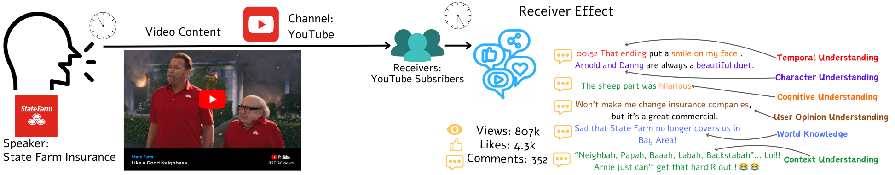

"Nothing in Nature is random. A thing appears random only through the incompleteness of our knowledge." — Baruch Spinoza
We are an AI research group exploring the Behavior Modality — using large language models (LLMs) and agentic AI to simulate, explain, predict, and optimize human behavior in the real world, especially in computational social science, marketing, and advertising.
Get in touch with us at behavior-in-the-wild@googlegroups.com
Behavior as a modality1 occurs in the process of communication. Communication includes all of the procedures by which one mind may affect another [1]. This includes all forms of expression, such as words, gestures, speech, pictures, and musical sounds.
Communication is composed of five modalities (shown in the diagram below (Fig. 1)): (1) Speaker, (2) Content, (3) Channel, (4) Receiver, (5) Behavior (Effect). One can also include two other (minor) modalities to these five: (6) Time of sending (7) Time of receiving. These modalities may vary independently of each other [2], [3], [4] and carry signals about each other [5], [6] [7]. The message as a modality carries information from the communicator to receiver and encodes information generated by the communicator. Similarly, behavior (aka effect) as a modality carries information from the receiver and encodes information generated by the receiver. This is often a continuous cycle, where behavior generated in the previous cycle becomes the message of the next cycle, thus forming a conversation.

From these seven modalities, we get the following research problems:
A motivation for why we work on the behavior modality is captured in a blog post by Yaman.
Each paper is tagged by the role behavior plays in it — Explaining Behavior Predicting Behavior Interventions to Optimize Behavior Using Behavior To Understand Other Modalities Better. Some papers carry more than one tag.